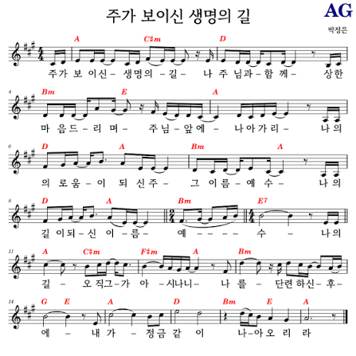
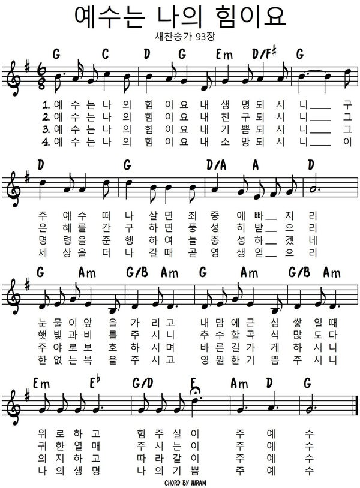

가족이 한자리에 모여 마음을 하나님께로 향합니다. 주변을 정돈하고 휴대전화와 TV는 잠시 내려놓습니다. 어린 자녀들도 자연스럽게 예배에 참여할 수 있도록 격려해 주십시오.
♡
예배 후 하나님께 받은 은혜와 가족을 향한 감사의 마음을 함께 나누시기 바랍니다.
2026 추석
사랑 안에서 가장 귀히 여기며
너희끼리 화목하라
데살로니가전서 5:13
WORSHIP ORDER
가족이 함께 마음을 모아 하나님께 예배드립니다.
PREPARATION
가족이 한자리에 모여 마음을 하나님께로 향합니다. 주변을 정돈하고 휴대전화와 TV는 잠시 내려놓습니다. 어린 자녀들도 자연스럽게 예배에 참여할 수 있도록 격려해 주십시오.
예배 후 하나님께 받은 은혜와 가족을 향한 감사의 마음을 함께 나누시기 바랍니다.
HYMN
함께 찬양하며 하나님을 높입니다.

PRAYER
하나님 아버지, 오늘 추석 명절을 맞이하여 온 가족이 함께 모여 예배드리게 하심에 감사드립니다.
언제나 주의 사랑 안에 거할 수 있도록 은혜를 허락하여 주시고 성령께서 늘 우리를 인도하셔서 평안과 사랑이 충만한 가정이 되게 하여 주옵소서.
우리 가정 모두가 예수님의 사랑으로 하나 되고, 주님의 십자가로 화목하게 하시고 또 이웃에게 그 사랑을 나누고 베풀며 살 수 있도록 인도하옵소서.
기쁨과 감사가 넘치게 하옵시고 세상을 능히 이겨낼 주의 자녀로 세워 주옵소서.
우리를 사랑하시는 예수님의 이름으로 기도드립니다.
아멘.
BIBLE READING
8절 하나님이 능히 모든 은혜를 너희에게 넘치게 하시나니 이는 너희로 모든 일에 항상 모든 것이 넉넉하여 모든 착한 일을 넘치게 하게 하려 하심이라.
9절 기록된 바 그가 흩어 가난한 자들에게 주었으니 그의 의가 영원토록 있느니라 함과 같으니라.
10절 심는 자에게 씨와 먹을 양식을 주시는 이가 너희 심을 것을 주사 풍성하게 하시고 너희 의의 열매를 더하게 하시리니
SERMON
추석은 한 해 동안 뿌린 씨앗이 자라 열매를 맺고,
그 열매를 함께 나누며 감사하는 명절입니다.
우리의 삶을 돌아보면 우리가 이룬 것보다
하나님께서 먼저 베풀어 주시고 채워 주신 은혜가
훨씬 많았음을 깨닫게 됩니다.
오늘 말씀을 통하여 하나님께 받은 은혜가
우리 안에만 머물지 않고 사랑과 섬김의 씨앗이 되어,
아름다운 열매를 맺는 가정이 되기를 바랍니다.
1.모든 것은 하나님의 은혜에서 시작됩니다 (8절)
우리 삶의 시작에는 언제나 먼저 베풀어 주시는
하나님의 은혜가 있습니다.
지금까지 우리 가족이 함께 살아올 수 있었던 것은
우리의 힘만으로 이루어진 일이 아니라
하나님께서 지키시고 채워 주셨기 때문입니다.
기쁜 날에도 하나님의 은혜가 있었으며,
어렵고 힘은 날을 견딜 수 있었던 것 또한 하나님의 은혜였습니다.
하나님께서 우리에게 은혜를 베푸시는 것은
단지 풍족하게 누리게 하시기 위함만은 아닙니다.
8절에서는 하나님께서 우리를 넉넉하게 하시는 이유를
"모든 착한 일을 넘치게 허게 하려 하심이라"고 말씀하십니다.
그러므로 받은 은혜를 기억하는 사람은
그 은혜를 다른 이들에게 흘려보내는 삶으로
자연스럽게 나아가게 됩니다.
2.은혜의 씨앗을 심어 의의 열매를 거둡시다(9-10절)
하나님께서는 우리에게 열매만 주시는 분이 아니라
다시 심을 수 있는 씨앗도 주시는 분입니다.
10절은 하나님을 "심는 자에게 씨와 먹을 양식을 주시는 이"라고 말씀합니다.
우리에게 주어진 시간과 물질, 건강과 재능, 그리고 서로 사랑할 수 있는 마음도
하나님께서 맡겨 주신 씨앗입니다.
씨앗을 손에 쥐고만 있으면 아무런 열매도 맺을 수 없듯이,
우리가 받은 은혜도 사랑과 섬김으로 나눌 때 비로소 열매를 맺습니다.
가족에게 건네는 따뜻한 말 한마디, 어려운 이웃을 돕는 손길,
교회와 세상을 섬기는 헌신이 하나님 앞에 심는 씨앗이 됩니다.
하나님께서는 그렇게 심은 씨앗을 자라게 하셔서
"너희 의의 열매를 더하게" 하신다고 약속하십니다.
그러므로 우리 가족이 하나님의 은혜를 많이 받은 가정에 머물지 않고,
받은 은혜를 기꺼이 심어 풍성한 열매를 맺는 가정이 되기를 바랍니다.
우리의 삶은 하나님의 은혜로 시작되어 하나님께서 맺게 하시는
헌신의 열매로 완성됩니다. 이번 추석에는 우리가 받은 복을 헤아리는 데 그치지 않고,
하나님께 받은 은혜가 사랑과 섬김으로 자라나
헌신의 삶으로 이어지기를 고백하는 시간이 되기를 소망합니다.
우리 가족이 가는 곳마다,
그리고 우리 교회가 감당하는 모든 사역 가운데 사랑과 섬김의 헌신이 이어져
하나님께서 기뻐하시는 아름다운 열매를 풍성히 거두게 되기를 축복합니다.
HYMN
새찬송가 93장

THE LORD'S PRAYER
하늘에 계신 우리 아버지여, 이름이 거룩히 여김을 받으시오며
나라가 임하시오며, 뜻이 하늘에서 이루어진 것 같이 땅에서도 이루어지이다.
오늘 우리에게 일용할 양식을 주시옵고
우리가 우리에게 죄 지은 자를 사하여 준 것 같이 우리 죄를 사하여 주시옵고
우리를 시험에 들게 하지 마시옵고 다만 악에서 구하시옵소서.
나라와 권세와 영광이 아버지께 영원히 있사옵나이다.
아멘.